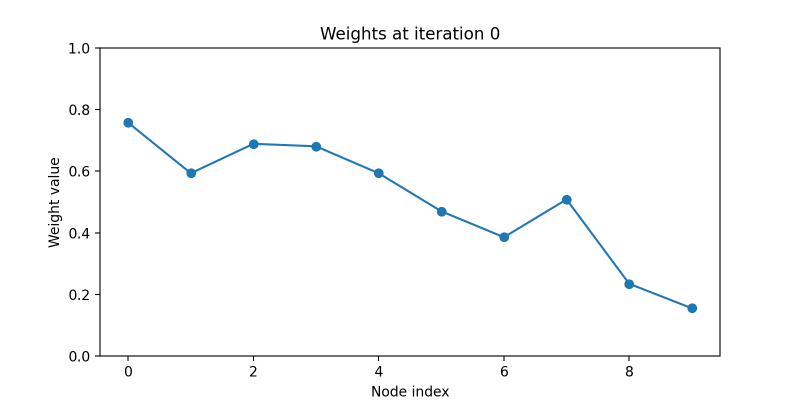
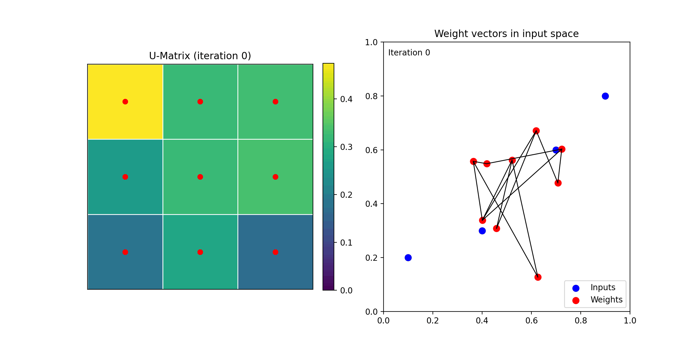
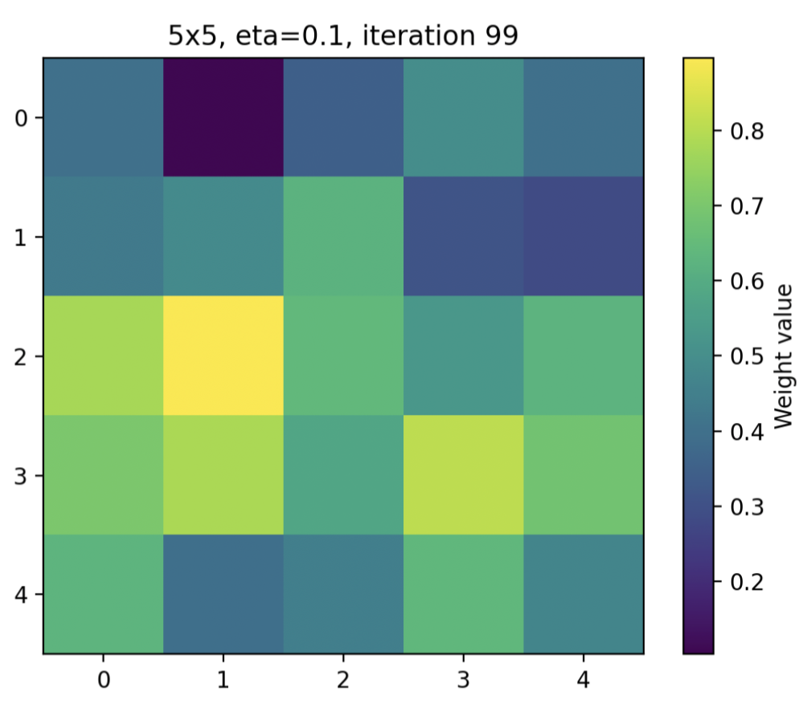
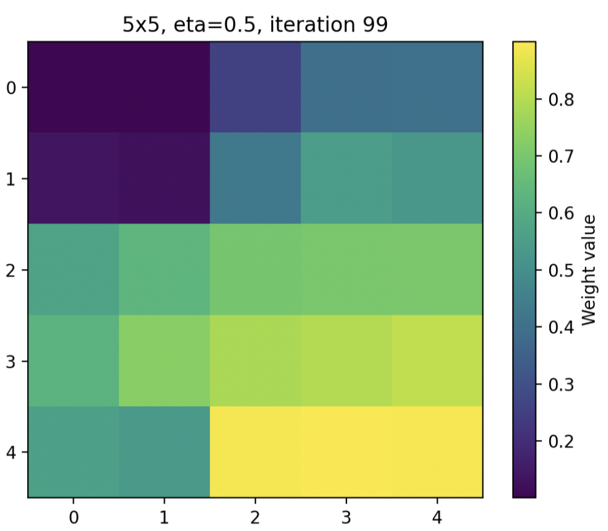
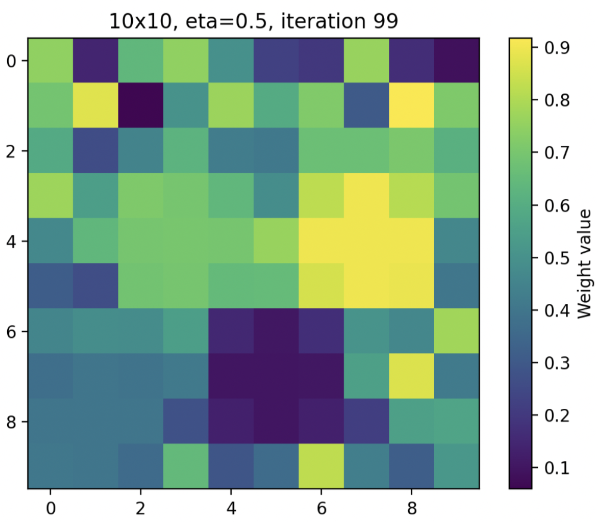

A Computational Exploration of Self-Organizing Maps
Introduction
This report presents a computational exploration of Self-Organizing Maps (SOMs), a class of unsupervised neural networks that model how structured representations can emerge from complex data. The goal of this project is to examine both the theoretical foundations and practical implementation of SOMs within the context of computational neuroscience. We begin by outlining the historical background and motivation behind SOMs, followed by an overview of their core computational principles and relevance to neural systems. We then demonstrate how SOMs can be implemented in code through simplified one-dimensional and two-dimensional examples, highlighting key processes such as best matching unit selection, neighbourhood-based learning, and convergence. Together, this report aims to provide a clear understanding of how SOMs function as both a data analysis tool and a biologically inspired model of learning.
Historical Background and Motivation
Self-Organizing Maps (SOMs) were introduced by Teuvo Kohonen in 1982 as part of his effort to understand how structured representations can emerge in neural systems without external supervision (Kohonen, 1982). At the time, much of artificial intelligence research focused on supervised learning approaches that required explicit target outputs. Kohonen’s work was different because it proposed that meaningful organization could arise through unsupervised learning, using only the statistical structure of the input. This idea was important because it aligned more closely with how learning is believed to occur in the brain, where explicit labels are rarely available.
Kohonen was particularly motivated by findings in neuroscience showing that the brain organizes sensory information into spatially structured maps. For example, neurons in sensory cortices are arranged so that nearby neurons respond to similar stimulus features. Kohonen aimed to create a computational model that could explain how this type of organization might develop. His model demonstrated that a network of neurons could self-organize into a topographically ordered map through two key mechanisms: competition between neurons to respond to inputs, and cooperation between neighboring neurons during learning (Kohonen, 1982).
A central insight of Kohonen’s model was that global structure could emerge from simple local learning rules. Each neuron adjusts its weights based on input data, but the adjustment is strongest for the best matching neuron and weaker for nearby neurons. Over time, this process leads to the formation of smooth gradients and organized clusters across the map. This provided one of the first clear demonstrations that topological relationships in data could be preserved in a neural network without explicit programming.
Kohonen’s work had a significant impact on both machine learning and computational neuroscience. It introduced a practical method for dimensionality reduction and clustering, while also offering a biologically plausible explanation for the formation of cortical maps. Later developments expanded on this original model, but the core idea of self-organization through competitive and neighborhood-based learning remains central to SOMs today (Kohonen, 2001; Kohonen, 2013).
Conceptual and Computational Significance
One of the most important contributions of SOMs is that they show how structured representations can develop from simple learning rules. During training, neurons gradually become specialized to respond to certain types of input. At the same time, nearby neurons develop similar responses, which leads to smooth transitions across the map. As a result, the final representation reflects the structure of the original data (Kohonen, 1982).
SOMs are useful for several reasons. First, they reduce the dimensionality of data, which makes complex datasets easier to visualize and interpret. Second, they group similar inputs together, allowing for unsupervised clustering. Third, they preserve the relationships between data points, so that similar items remain close together in the map. These features make SOMs especially helpful for exploring datasets where labels are not available.
Applications to Computational Neuroscience
Self-Organizing Maps (SOMs) continue to be highly relevant in computational neuroscience because they provide a biologically grounded framework for understanding how neural representations are organized. One of their primary contributions is in modeling the formation of topographic maps in the brain, such as those observed in visual, auditory, and somatosensory cortices. These maps reflect orderly relationships between stimuli and neural responses, and SOMs offer a computational explanation for how such structure can emerge through local learning rules and competitive interactions (Kohonen, 1982).
More specifically, SOMs have been used to simulate the development of cortical feature maps, including orientation selectivity in the visual cortex. For example, computational studies have shown that SOM-like mechanisms can reproduce key properties of biological visual maps, such as smooth gradients and organized singularities, which are also observed experimentally in cortical tissue (Swindale & Bauer, 1998). This supports the idea that relatively simple self-organizing processes may underlie complex neural organization in the brain.
In addition to modeling sensory systems, SOMs are increasingly applied to the analysis of neural population data. Modern neuroscience often involves high-dimensional datasets, such as recordings from large populations of neurons or brain imaging data. SOMs are particularly useful in this context because they can reduce dimensionality while preserving meaningful relationships in the data. This allows researchers to identify patterns of neural activity, cluster similar response profiles, and visualize large-scale neural dynamics in an interpretable way (Guérin et al., 2024).
Recent research has also expanded the role of SOMs in studying dynamical systems and neural processes over time. For example, newer variants such as anisotropic self-organizing maps have been developed to infer hidden structures in complex time series data, including latent drivers of neural activity. These models can reconstruct underlying dynamics more accurately than traditional methods, highlighting the continued relevance of SOM-based approaches in analyzing nonlinear neural systems (Benko et al., 2026).
Another important area of application is the integration of SOMs with modern machine learning frameworks. Recent work has combined SOMs with deep learning architectures to create models that maintain biologically realistic topographic organization while still achieving strong performance on tasks such as visual recognition. These hybrid models attempt to better replicate the organization of cortical areas, such as the ventral visual stream, where neurons with similar functions are spatially clustered (Dehghani et al., 2025). This line of research is particularly important because it bridges the gap between traditional neuroscience models and contemporary artificial intelligence systems.
SOMs are also used in multimodal and cognitive modeling, where they help explain how different types of information may be integrated and organized in the brain. For instance, extensions of SOMs that incorporate Hebbian learning have been applied to model how multiple sensory inputs can be combined into unified representations. These approaches reflect the distributed and interactive nature of neural processing and support the idea that cognition emerges from coordinated activity across multiple brain systems (Muliukov et al., 2022).
Understanding Self-Organizing Maps
Self-organizing maps, as described by Kohonen, are neural networks capable of mapping high dimensional data onto lower dimensional representations, while keeping intact the relationships within the data. Instead of relying on labelled data and feedback like in supervised learning models, Self-organizing maps (SOMs) utilize a form of Hebbian learning where neurons become self-organized based on the features of the data and the current state of the map. These maps can be thought of as a flexible grid that changes and reshapes to fit input data in an organized way. This ability to organize patterns in the data while maintaining the relationships between the patterns make SOMs a powerful tool for specific tasks requiring visualization or dimensionality reduction. Simpler methods which form separate clusters without preserving relationships between the clusters like k-means would fail on these types of tasks.
Map Structure
A Self-organizing map consists of a collection of nodes (called neurons) arranged in low dimensional space, usually either a line (1D) or a lattice (2D). These neurons are defined by two values, a weight vector which corresponds to some location in the high dimensional space the inputs come from and the position vector which specifies the neuron’s location in the low dimension map space. Each weight vector consists of a list of numbers, one for each dimension of the input data. So for three dimensional input data each neuron would possess a weight vector with three numbers representing a location in the three dimensional space. This allows the arranging of values from a high dimensional space on a two dimensional grid. These weight vectors are initially randomized for each neuron on the grid leading to a structure that starts off disorganized and becomes organized over time.
Best Matching Unit
Each high dimensional input has a vector representing its location in the high dimensional space which reflects the values of its features. This input vector is then compared to the weight vector of each neuron on the grid. The node with a weight vector closest to the input vector is declared the best matching unit (BMU). Euclidean distance is used for BMU determination. Euclidean distance represents the shortest path between points in space using the Pythagorean theorem. The euclidean distance between two points in n-dimensional space is given by the formula \[ D_{ij}^2 = \sum_{v=1}^{n} \left(x_{vi} - x_{vj}\right)^2 \] Organization begins and structure is built up through this pairing of input vector with their BMU, or the neuron with the most similar weight vector according to euclidean distance. In self-organizing maps the organization is driven solely by the similarity between inputs and the best matching units, foregoing error driven updates common in supervised learning.
Learning and Neighbourhood Function
When each input vector is associated with its best matching unit a learning rule will be triggered. This learning rule causes the weight vector of the best matching unit to shift and become more similar to the input. The magnitude of the weight vector update is determined by the learning rule. Unlike simpler models however, SOMs update not only the best matching unit but nearby nodes on the grid as well. This is known as neighbourhood cooperation, defined by a neighbourhood function within the learning rule. This is typically a gaussian function where neurons closer to the best matching unit are updated more than neurons farther away leading to a smooth decrease in influence the farther you get from the best matching unit. The formula: \[ w_i(t+1) = w_i(t)+\eta(t)\, h_{ci}(t)\, \big(x-w_i(t)\big) \] describes the learning rule. The different terms describe the original weight vector, the direction towards the input, how big the shift in weight vectors will be, and how much the node is influenced by the BMU based on distance (neighbourhood rule). This creates coordinated learning across the map and smooth transitions between categories. The radius of the neighbourhood function often decreases over time, establishing global organization at first and updating small regions later to fine tune. This forms meaningful and stable patterns. This specific way of learning allows for key features of self-organizing maps like dimensionality reduction and topology preservation. This means that high dimensional data is reduced to a lower dimension that is easier to visualize and interpret while the high dimensional relationships in the data remain intact.
Convergence and Stability
When discussing self-organizing maps, convergence refers to the point at which weight vectors change very little between iterations, leading to a stable map structure. After convergence small updates will still occur but they will not meaningfully change the map due to the structure becoming more organized and the neighbourhood function decaying. Self-organizing maps can converge in different ways depending on the parameters. If the neighbourhood function decays too quickly the map may stop significantly updating before it has reached an organized structure. If they decay too slowly the map will fail to stabilize and continue to change. Convergence of the SOM reaches will not look the same every time, due to the random initialization of the weight vectors leading to different converged map structures. This is why using a fixed seed, or the same set of randomly generated weight vectors, will allow for reproducibility each time the code is run. Even with a fixed seed, to reliably recreate a map final map structure the parameters and input order must also be the same. However since this fixed seed is still an arbitrary set of randomly generated numbers there is no one perfect map, as any set of initial weight vectors will lead to a different representation of the data. To gauge how effective a self-organizing map has done at organizing data, quantization error and topographic error are often used. Quantization error measures how close inputs are to their best matching unit, while topographic representation measures how well neighbourhood relationships are preserved. The convergence of SOMs may also reflect biological processes like competition, cooperation and adaptation. They resemble how nearby neurons respond to similar stimuli and how these organized structures emerge without supervision.
Methods: Implementation of the Self-Organizing Map Algorithm
Not all aspects of the mathematical theory of Self-Organizing Maps (SOM) are essential to implement the model into code. SOMs rely on weight vectors representing nodes that will adapt to input data. The distance between inputs and nodes determines the Best Matching Unit (BMU), which is the node closest to the input. A neighbourhood function allows nearby nodes to adjust alongside the BMU, while the learning rate and neighbourhood width decay control how quickly the map adapts over time. These components constitute the essentials for realizing the model in code (see Kohonen, 2013).
Core Implementation Steps
Before we can feed any data into an SOM, the weight vectors for each node need to be initialized. Since the initial values are arbitrary, this is usually done by randomly generating values for each node. For example, using Python’s numpy library, weights for n_nodes can be generated with:
weights = np.random.rand(n_nodes)As the algorithm runs, the weights will adjust in response to the input data to eventually organize into meaningful patterns. By starting with random values, we prevent bias from any initial configuration. To make the initialization more biologically realistic, you can use prior knowledge about node spacing or other biases instead of random values. This allows the SOM to start closer to expected patterns, which can speed up learning or produce more meaningful organization.
To organize the strength of weight updates, the SOM needs a way to find the Best Matching Unit (BMU) for each input. This is done by calculating the Euclidean distance between each node’s weight vector and the input vector. The node with the smallest distance to the input vector is then selected as the BMU (using the argmin function) and serves as the anchor for weight updates in the algorithm. In code, this process can be implemented directly. However in lower dimensions, such as 1D (example below), the square of the difference between vectors is enough to find the BMU, since taking the square root does not change which node is closest. This simplification reduces unnecessary computation and keeps the implementation more efficient.
def find_bmu(weights, x):
distances = (weights - x)**2
return np.argmin(distances)The weight update function ties the SOM’s components together, using the learning rate (η or α) and the neighbourhood function (hci) to control how node weights adapt during training. Classic SOMs use competitive learning, where all nodes are updated toward the input, but the amount of change is graded: the BMU moves the full amount allowed by the learning rate, nearby nodes update less depending on their distance from the BMU, and distant nodes move very little.
def update_weights(weights, x, eta, h):
weights += eta * h * (x - weights)
return weightsIn standard SOMs, weights are always updated toward the input, though many variants exist where updates can differ in direction, magnitude, or neighbourhood influence (e.g., repulsive or asymmetric updates; Kwa et al., 2022). The choice of variant depends on the goals of the model.
To support reproducibility, the SOM was trained using different numbers of iterations depending on the demonstration (i.e., 1D and 2D) to illustrate varying convergence behaviour. The learning rate and neighbourhood radius were updated using exponential decay over time based on the initial rates and a time constant (τ). The neighbourhood function followed the distance-dependent weighting function described in Kohonen (2013), in which larger updates are assigned to nodes closer to the BMU in the grid. The randomly generated initial weights were set to a fixed seed to ensure reproducibility across simulations. A full implementation is provided in Appendix A and the GitHub repository.
The training loop is responsible for driving the SOM learning process by repeatedly applying the BMU selection and weight update steps over multiple iterations. For a set number of iterations (defined in the parameters), the algorithm processes each input sample and updates the weights at each training step t. Since the learning rate and neighbourhood width are also updated over time, the neighbourhood width (σ) is constrained to remain above zero to avoid undefined or meaningless values.
for t in range(n_iterations):
for x in inputs:
c = find_bmu(weights, x)
alpha = eta(t, eta_initial, tau)
sig = max(sigma(t, sigma_initial, tau), 1e-8)
h = neighbourhood(n_nodes, c, sig)
weights = update_weights(weights, x, alpha, h)Together, these components form the core SOM algorithm, where weights are iteratively adjusted to reflect the structure of the input data. This implementation can then be extended to different dimensional settings.
1-Dimensional SOM Demonstration
The 1-dimensional (1D) SOM provides a simple way to observe how the nodes gradually organize themselves along a line. Over successive iterations, the weights never completely stop updating; instead, they gradually stabilize as the map adapts less with each step. The figure below demonstrates how the SOM continuously organizes to reflect the structure of the input data.
Figure 1
Organization of Node Weights in a 1D SOM across 200 Iterations

Input values were normalized within a range of 0–1.
2-Dimensional SOM Demonstration
In higher dimensions, such as 2D, the learning mechanisms remain the same as in 1D. However, the nodes are arranged in a grid of neighbourhoods rather than along a single line to allow the map to represent more complex input structures. In the code, this requires storing node weights as a 2D array (or higher-dimensional array), and adjusting neighbourhood calculations to account for grid distances. Here, the input dimension is set to 2 (input_dim = 2), so each node weight is a 2 element vector, matching the input space.
One way to depict higher dimensions onto a 2D grid is as a U-Matrix (Unified Distance Matrix). Shown in figure 2, the U-Matrix shows the distances between neighbouring nodes, with higher values indicating larger gaps and potential cluster boundaries. In the example code below, neighbours in the training loop are defined as nodes horizontal and vertical to the BMU, this is a simplification for demonstration, as most SOMs use distance-based neighbourhoods, not just immediate neighbours.
grid_size = int(np.sqrt(n_nodes))
weights_grid = weights.reshape(grid_size, grid_size, input_dim)
def find_bmu_grid(weights_grid, x):
distances = np.sum((weights_grid - x)**2, axis=2)
return np.unravel_index(np.argmin(distances), distances.shape)Figure 2
U-Matrix and Node Weight Organization of a 2D SOM after 100 Iterations

In the U-Matrix, darker colours represent larger distances between neighbouring nodes, while lighter colours indicate nodes close together in the input space.
Existing Coding Libraries
There are several software libraries available for coding SOMs, ranging from simple implementations to complex parallel training. Highlighted examples discussed here include MiniSom in Python, Somoclu in C++, and Kohonen’s package in R.
MiniSom (Vettigili, 2018) is a Python package that only requires a data array of any number of dimensions and can generate various visualization options such as seed maps, hexagonal topology, and colour quantization. The main benefit of this library is its ability to adapt automatically to the number of dimensions given, unlike our simplified code, which needs to be tweaked each time to handle higher or lower dimensions.
Somoclu, developed by Wittek et al. (2017), is designed for parallelized training of large-scale SOMs. It distributes computations in parallel across multiple CPU cores using OpenMP, across clusters via MPI, and on GPUs using CUDA (enables GPU acceleration). As a result, Somoclu is well suited for very large map sizes and/or high-dimensional datasets. For instance, it is used to analyze large molecular datasets and can be applied to wine classification, such as by clustering fermentation types based on carboxylic acid ratios in different grape varieties (Milovanovic et al., 2019). Although written in C++ it is also accessible through Python, R, Julia and MATLAB.
Lastly, the kohonen R package, created by Wehrens and Buydens (2007), implements the SOM framework originally introduced by Teuvo Kohonen with several variants. The package includes the standard unsupervised SOM, and also supervised extensions (e.g., bi-directional SOMs) and multi-layered SOMs (e.g., supersom) which can integrate multiple data sources. An advantage of this package is its flexibility such as allowing supervised information to be incorporated into the SOM rather than requiring a completely separate model. More recent updates, including version 3.0 (Wehrens & Kruisselbrink, 2018), further expand this flexibility by introducing new elements, including support for different distance measures other than standard Euclidean distance calculations. Overall, there is an ongoing emergence of specialized SOM libraries that serve different purposes, highlighting the method’s ongoing relevance in modern computational neuroscience.
Results of Simulations
Simulations were conducted to evaluate the behaviour of the Self-Organizing Map (SOM) under different grid sizes and learning rates. The configurations we tested are shown in table 1.
Table 1.
SOM Results by Grid Size and Learning Rate (η)
| η = 0.1 | η = 0.5 | |
| 5x5 |  |
 |
| 10x10 |  |
1 – Effect of Learning Rate (η)
The learning rate plays a significant role in how quickly and effectively the SOM organizes itself. In this model, weight updates are proportional to the learning rate, meaning that larger values of η result in more substantial adjustments during each iteration. The results show that a higher learning rate (η = 0.5) produced a more structured and visually organized map compared to a lower learning rate (η = 0.1) in 100 iterations. This is because the larger learning rate allows the weights to move more quickly toward the input values, enabling faster organization within a limited number of training iterations. In contrast, a smaller learning rate led to slower adaptation, resulting in less clearly defined structure over the same number of iterations. However, while a higher learning rate improves short-term organization, excessively large values may introduce instability and prevent proper convergence.
2 – Effect of Grid Size
The size of the SOM grid also influences how the learning rate affects the overall organization. Although the learning rate is computed using the same decay function regardless of grid size, its practical impact differs depending on the number of nodes. For the larger 10×10 grid, the same learning rate must adjust a greater number of neurons. As a result, a smaller learning rate (η = 0.1) was less effective in producing noticeable organization within 100 iterations. The map appeared less structured compared to the smaller grid under similar conditions. In contrast, using a higher learning rate (η = 0.5) in the larger grid improved the formation of visible patterns and structure. The increased update magnitude allowed the SOM to better organize the expanded set of weights.
Relevance of Self-Organizing Maps
Self-Organizing Maps remain relevant as a tool for unsupervised data exploration and visualization, particularly when working with complex or high-dimensional datasets. As highlighted by Wehrens and Buydens (2007), SOMs are effective because they allow data to be visualized without relying on strict statistical assumptions, making them useful in exploratory analysis.
An important strength of SOMs is their ability to preserve topological relationships, meaning that similar data points are mapped to nearby neurons. This makes them valuable for identifying clusters, patterns, and anomalies in situations where labeled data is not available. As a result, SOMs are especially useful in early-stage analysis, where the underlying structure of the data is not yet known. SOMs also provide a level of interpretability that more complex machine learning models tend to lack. Rather than focusing purely on prediction, they help users understand how data is organized.
Limitations of Self-Organizing Maps
Despite their advantages, SOMs have several limitations that restrict their use in modern machine learning applications. First, SOMs are generally not meant for predictive performance. While they are effective for visualization and approximate clustering, they are typically outperformed by other models in tasks requiring high classification accuracy or advanced representation learning. Second, SOMs are sensitive to parameter choices. As noted in Kohonen’s original work, successful organization depends on appropriate conditions during training. Key parameters such as learning rate, map size, and neighborhood radius must be appropriately selected. Different choices can lead to significantly different results, meaning that the method may lack consistency across runs.
Several factors contribute to the sensitivity of Self-Organizing Maps. The initialization of the model plays a role, as random starting weights can lead to different final map configurations. The chosen map size is also important; too few neurons may not adequately capture the underlying data structure, while too many can result in overfitting. The learning rate must be carefully selected, since values that are too small can slow convergence, whereas excessively large values may cause instability during training. Finally, the neighborhood function significantly affects performance, a small radius can limit generalization, while a large radius may reduce important structural detail.
SOMs are less commonly used in modern machine learning pipelines, where more flexible and scalable methods are often preferred. While SOMs remain useful for interpretation and visualization, their limitations show that they are better applied as exploratory tools rather than primary predictive models.
General Assessment
This presentation provides a clear and well-structured introduction to Self-Organizing Maps, especially for students learning the concept for the first time. One of the main strengths is the step-by-step explanation of key processes in SOMs, such as best matching unit selection, neighborhood-based learning, and convergence. Breaking the algorithm into smaller components, and showing how it works in both one-dimensional and two-dimensional examples, effectively separates abstract ideas into ones that are easier to understand. By also including simple code examples throughout, it helps connect the theory directly to how SOMs are actually implemented.
The use of visualizations, such as the 1D plots and 2D U-Matrix, adds strong instructional value by showing how the map organizes over time. These figures make it easier to see patterns that would be harder to understand from code or equations alone. The Results of Simulations section clearly demonstrates how parameters like learning rate and grid size affect the outcome. This can encourage a more thoughtful understanding of how the model changes and varies based on many factors.
From a teaching perspective, this report could serve as a solid foundation for developing further course material. The clear separation between background, explanation, implementation, and results makes it easy to expand each section into more detailed lessons.
References
Bishop, C. M. (2006). Pattern recognition and machine learning. Springer
Benkő, Z., Stippinger, M., Bencze, A., Bazsó, F., Telcs, A., & Somogyvári, Z. (2026). Inference of hidden common driver dynamics by anisotropic self-organizing neural networks. Neural Networks, 194, 108113. https://doi.org/10.1016/j.neunet.2025.108113
Dehghani, A. O., Qian, X., Farahani, A., & Bashivan, P. (2025). Credit-based self-organizing maps: Training deep topographic networks with minimal performance degradation [Conference presentation slides]. International Conference on Learning Representations (ICLR 2025).https://iclr.cc/media/iclr-2025/Slides/27851.pdf
Guérin, A. & Chauvet, P. & Saubion, F. (2024). A Survey on Recent Advances in Self-Organizing Maps. 10.48550/arXiv.2501.08416.
Haykin, S. (2009). Neural networks and learning machines (3rd ed.). Pearson
Kohonen, T. (1982). Self-organized formation of topologically correct feature maps. Biological Cybernetics, 43(1), 59–69. https://doi.org/10.1007/BF00337288
Kohonen, T. (2001). Self-organizing maps (3rd ed.). Springer
Kohonen, T. (2013). Essentials of the self-organizing map. Neural Networks, 37, 52–65. https://doi.org/10.1016/j.neunet.2012.09.018
Kwa, H. L., Leong Kit, J., & Bouffanais, R. (2022). Balancing collective exploration and exploitation in multi-agent and multi-robot systems: A Review. Frontiers in Robotics and AI, 8. https://doi.org/10.3389/frobt.2021.771520
Milovanovic, M., Žeravík, J., Obořil, M., Pelcová, M., Lacina, K., Cakar, U., Petrovic, A., Glatz, Z., & Skládal, P. (2019). A novel method for classification of wine based on organic acids. Food Chemistry, 284, 296–302. https://doi.org/10.1016/j.foodchem.2019.01.113
Muliukov, A. R., Rodriguez, L., Miramond, B., Khacef, L., Schmidt, J., Berthet, Q., & Upegui, A. (2022). A Unified Software/Hardware Scalable Architecture for Brain-Inspired Computing Based on Self-Organizing Neural Models. Frontiers in neuroscience, 16, 825879. https://doi.org/10.3389/fnins.2022.825879
Ritter, H., Martinetz, T., & Schulten, K. (1992). Neural computation and self-organizing maps. Addison-Wesley
Swindale, N. V., Bauer, H-U. (1998). The application of Kohonen self-organizing maps to neuroscience. University of British Columbia.https://swindale.ecc.ubc.ca/wp-content/uploads/2020/09/application_of_kohonen.pdf
Vettigli, G. (2018). MiniSom: minimalistic and NumPy-based implementation of the Self Organizing Map. GitHub. https://github.com/JustGlowing/minisom/
Vesanto, J. (2000). SOM-based data visualization methods. Intelligent Data Analysis, 3(2), 111–126
Wehrens, R., & Buydens, L. M. (2007). Self- and super-organizing maps in r: The kohonen package. Journal of Statistical Software, 21(5). https://doi.org/10.18637/jss.v021.i05
Wehrens, R., & Kruisselbrink, J. (2018). Flexible self-organizing maps in kohonen 3.0. Journal of Statistical Software, 87(7). https://doi.org/10.18637/jss.v087.i07
Wittek, P., Gao, S. C., Lim, I. S., & Zhao, L. (2017). Somoclu: An efficient parallel library for self-organizing maps. Journal of Statistical Software, 78(9). https://doi.org/10.18637/jss.v078.i09
Appendix A: SOM Implementation (Python)
A1. GitHub Repository
Contains code written in Python for the one and two dimensional implementation of a simple self organizing map model. In addition to the core algorithm is a qmd file for this paper, a 2D sample dataset and files transforming the code into an animation (for visualization of training progression). GitHub Repository: https://github.com/Linqqqqqq/Psych_420_SOM.git
A2. 1D SOM Implementation
import numpy as np
import matplotlib.pyplot as plt
# 1D Parameters
np.random.seed(10)
n_nodes = 9
weights = np.random.rand(n_nodes)
inputs = np.array([0.1, 0.4, 0.9, 0.7])
eta_initial = 0.5
sigma_initial = 1.0
n_iterations = 100
tau = n_iterations / np.log(sigma_initial + 1e-8)
def eta(t, eta_initial, tau):
return eta_initial * np.exp(-t / tau)
def sigma(t, sigma_initial, tau):
return sigma_initial * np.exp(-t / tau)
def find_bmu(weights, x):
distances = (weights - x)**2
return np.argmin(distances)
def neighbourhood(n_nodes, c, sig):
h = np.zeros(n_nodes)
for i in range(n_nodes):
dist_sq = (i - c)**2
h[i] = np.exp(-dist_sq / (2 * sig**2))
return h
def update_weights(weights, x, eta, h):
weights += eta * h * (x - weights)
return weights
for t in range(n_iterations):
for x in inputs:
c = find_bmu(weights, x)
alpha = eta(t, eta_initial, tau)
sig = max(sigma(t, sigma_initial, tau), 1e-8)
h = neighbourhood(n_nodes, c, sig)
weights = update_weights(weights, x, alpha, h)A3. 2D SOM Implementation
import numpy as np
import matplotlib.pyplot as plt
# 2D Parameters
np.random.seed(10)
n_nodes = 9
input_dim = 2
weights = np.random.rand(n_nodes, input_dim)
inputs = np.array([
[0.1, 0.2],
[0.4, 0.3],
[0.9, 0.8],
[0.7, 0.6]
])
eta_initial = 0.5
sigma_initial = 1.0
n_iterations = 100
tau = n_iterations / np.log(sigma_initial + 1e-8)
def eta(t, eta_initial, tau):
return eta_initial * np.exp(-t / tau)
def sigma(t, sigma_initial, tau):
return sigma_initial * np.exp(-t / tau)
def find_bmu(weights, x):
distances = np.sum((weights - x)**2, axis=1)
return np.argmin(distances)
def neighbourhood(n_nodes, c, sig):
h = np.zeros(n_nodes)
for i in range(n_nodes):
dist_sq = (i - c)**2
h[i] = np.exp(-dist_sq / (2 * sig**2))
return h
def update_weights(weights, x, eta, h):
weights += eta * h[:, np.newaxis] * (x - weights)
return weights
# Training Loop
for t in range(n_iterations):
for x in inputs:
c = find_bmu(weights, x)
alpha = eta(t, eta_initial, tau)
sig = max(sigma(t, sigma_initial, tau), 1e-8)
h = neighbourhood(n_nodes, c, sig)
weights = update_weights(weights, x, alpha, h)
print("\nFinal weights:\n", weights)
grid_size = int(np.sqrt(n_nodes))
weights_grid = weights.reshape(grid_size, grid_size, input_dim)
def find_bmu_grid(weights_grid, x):
distances = np.sum((weights_grid - x)**2, axis=2)
return np.unravel_index(np.argmin(distances), distances.shape)